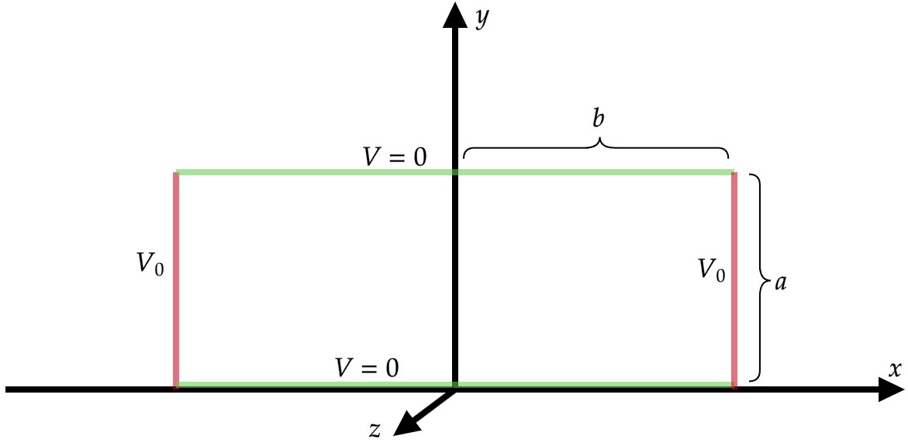
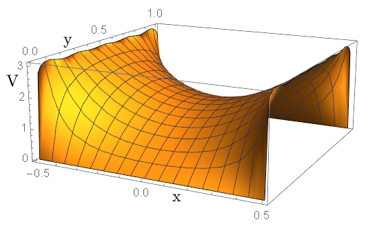
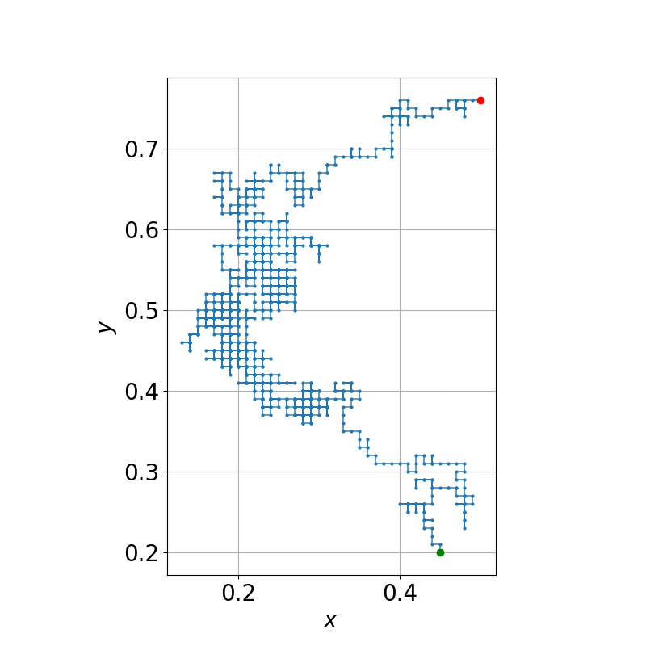
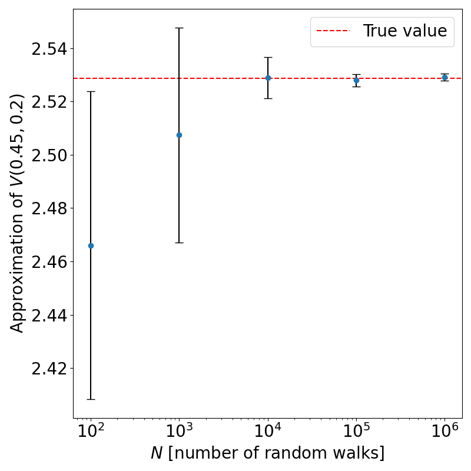
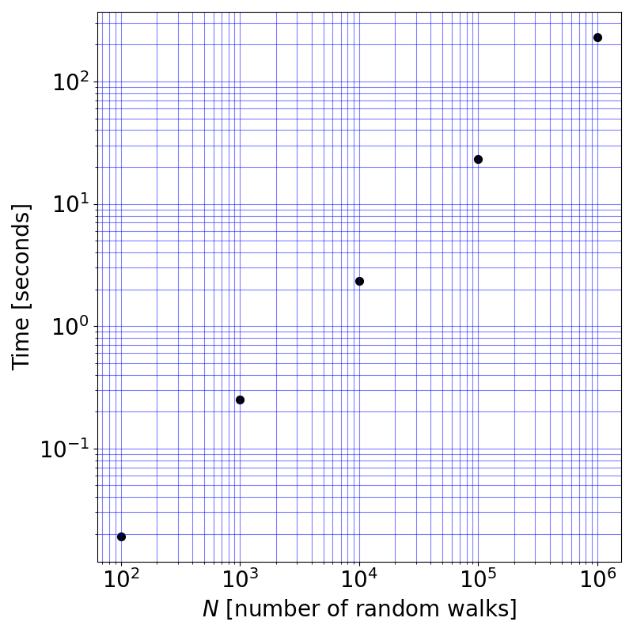

Fernando Garcia Cortez
Electrostatics Potential Problems using Monte Carlo
Whenever I think about electromagnetism, potential theory always comes to mind. Whether it's using theorems to validate solutions and propositions, the method of separation of variables, or employing the method of images, I remember these problems fondly. Beyond that, I always wondered about more complex problems and the lack of analytic methods to solve them.
In this post, I explore the idea of solving a boundary value problem using Monte Carlo methods. Specifically, I'll present an electrostatic configuration and compare the exact theoretical solution to the results obtained through statistical methods.
Let's begin by considering Laplace's equation for a scalar field $u(\mathbf{x}) $,
\[\nabla ^2 u=0 .\]This equation can be turned into a finite difference equation, a common exercise when studying numerical methods to solve this kind of problems. This form follows (in two dimensions):
\[\nabla ^2 u=\frac{u(x+\Delta ,y)+u(x-\Delta ,y)+u(x,y+\Delta )+u(x,y-\Delta )-4u(x,y)}{\Delta ^2 }=0, \]where $\Delta $ stands for the spacing between neighboring points in the two dimensional lattice. It is relevant to isolate $u(x,y) $
\[u(x,y)= \frac{u(x+\Delta ,y)+u(x-\Delta ,y)+u(x,y+\Delta )+u(x,y-\Delta )}{4}\]Instead of performing the finite difference method (FDM), we can observe the following: random walks starting at a given point in the domain will terminate at a boundary point after some time. This random walk operates under the assumption that there is an equal $1/4$ chance of moving from $(x, y)$ to $(x+\Delta, y)$, $(x-\Delta, y)$, $(x, y+\Delta)$, or $(x, y-\Delta)$.
Here is the proposition: an estimate of $u(x, y)$ (the solution to Laplace's equation at a given point in the domain) can be obtained by running multiple random walks that terminate at boundary points. If $N$ walks are run, then the approximation is given by:
\[u(x,y)\sim \frac{1}{N}\sum_{i}^{} f(x_i ,y_i ), \]where $f$ is the function that determines the boundary values.
To explore this method, I will borrow an example problem from Griffith's "Introduction to Electrodynamics." We want to find the electric potential field, so $V(\mathbf{x}) $ acts as $u $ in the aforementioned equations.
Consider four infinitely long (extending in the $z $-axis) metal plates meeting at their edges to form a prism, such that the top and bottom plates have a width of $2b $ and the vertical plates have a height of $a $. The horizontal plates are grounded ($V=0 $), while the vertical plates are kept at a constant potential $V_0 $.
Using separation of variables one can show that
\[V(x,y)=\frac{4V_0 }{\pi }\sum_{n=1,3,5,\cdots }^{} \frac{1}{n}\frac{\cosh (n\pi x/a)}{\cosh (n\pi b/a)}\sin (n\pi y/a). \] With $a=1 $, $b=0.5 $, and $V_0 =3 $, the first 50 terms of the series solution yield:
\[V(0,45,0.2)=2.52874 \tag{*}\]It is this point, $(0.45,0.2) $, the one we will use as the starting point of the random walks and thus we will approximate(only, and not the entire solution) $V(0,45,0.2) $. The value in ($* $) will be our baseline to compare the results form the random walks.
Example of a random walk over the problem's domain.
The walker algorithm is straightforward. Randomly pick a direction, update the position, and repeat until we detect a boundary point. In this case, if it detects that we are in an edge of constant $x $, then return $V_0$. If it detects that we are in an edge of constant $y$, return $0$.
Below is a graph comparing the method at different $N $. Five runs were used to compute the averages and errors. The dashed red line indicates the true value as computed using the first 50 terms of the series solution.
As $N$ grows, individual predictions fall closer and closer to the real value in a more consistent manner. Find below a comparison of computation times (i5-11400F 11th gen 6 Cores 12 Threads, DDR4 32 GB, Windows 10 64 bit)
It is clear that the Monte Carlo method discussed is a valid approach to solving these types of problems. One question remains: is it any faster than FDM? At first glance, parallelizing the Monte Carlo method seems much more straightforward than parallelizing FDM. This question will be addressed in a later post!